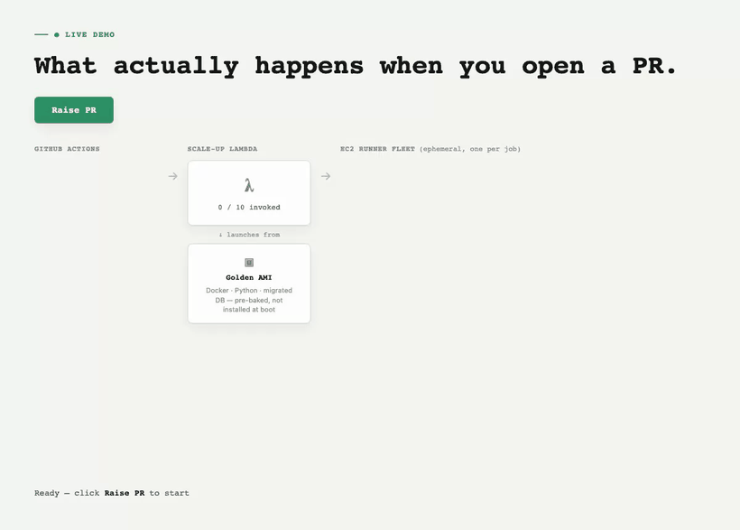

Migrating our CI from GitHub-hosted to self-hosted AWS workers
How we moved a 13-leg functional-test matrix off GitHub-hosted runners, cut its cost by roughly 70%, halved per-leg time — and found the real reasons every job was slower and flakier than it should have been.

The problem
Every PR run on our main Django backend was burning roughly 87 billable minutes on GitHub-hosted ubuntu-latest runners, at about 18.5 runs a day. At GitHub's per-minute Linux rate, that worked out to around $289 a month — and 93–96% of that was one thing: the functional-test matrix. Ten to twenty parallel legs, each paying the same fixed cost — checkout, Python setup, poetry install, a MySQL container built from scratch — before a single test actually ran.
Speed had the same shape as cost. Most of a leg's wall-clock time wasn't spent testing anything at all.
The approach
Rather than trying to make the hosted runners cheaper, we moved the expensive part — the functional-test matrix — onto ephemeral EC2 runners, one instance per job. Nothing sits idle between jobs; the fleet scales to zero when there's no PR open.
- Trigger — GitHub sends a
workflow_job: queuedwebhook for every matrix leg. - Scale-up — a Lambda launches one EC2 instance per job from a golden AMI. The instance registers with GitHub and claims the job.
- Teardown — the job finishes, the instance self-terminates, and a backstop Lambda sweeps anything orphaned.
We built this on github-aws-runners/terraform-aws-github-runner instead of hand-rolling it — dedup, JIT registration, and backoff were already solved by a maintained module. Everything lives in an additive-only Terraform module; no existing shared infra file had to change to get here.
The golden AMI
A stock Ubuntu image isn't enough on its own — no Docker, no Python, no dependencies. Baking those in ahead of time, via Packer, is the entire reason self-hosted runners ended up fast, not just cheaper. Every AMI bakes in Docker plus a pre-pulled MySQL image, the GitHub Actions runner agent itself, a Python + Poetry virtualenv matching poetry.lock — and, the important one, a fully-migrated test database.
New AMI builds publish their ID to an SSM parameter, and every new instance resolves that parameter live at launch. No redeploy needed, and no risk of a half-built AMI reaching a real job, since the publish step only fires after Packer actually succeeds.
Bug one: the migration replay
Here's the part that took the longest to find: even with a real, fully-migrated database baked into the AMI, every single job was still replaying 777 migrations from empty.
Root causeThe Packer bake's own trigger test never passed
--reuse-db. pytest-django's default teardown dropped the test database the moment that trigger test finished — before the instance was even snapshotted. Every AMI shipped with an empty database, no matter how correct the bake script looked on paper.
One line fixed it — adding --reuse-db to the bake's own trigger run. I confirmed it live over SSM, watching a real instance's django_migrations row count climb during a run that was supposedly "reusing" the database, before the fix went in.
Bug two: a listener that garbage-collected itself
One test started failing intermittently on the new runners, and the obvious suspect was a Python or dependency version mismatch between the old and new images. That turned out to be a red herring. The real cause was a signal listener registered without a strong reference anywhere else in the process — Python's garbage collector was free to clean it up between when it was registered and when the signal actually fired, and the new runners' timing just happened to expose the race that the old ones had been masking.
Bug three: an autoscaler capped at one
Job pickup was wildly inconsistent — most jobs grabbed a runner in seconds, but some sat in the queue for over 9 minutes for no visible reason. It wasn't a quota or a cold-start problem; the Lambda responsible for scaling up runners had its reserved concurrency capped at a single concurrent invocation by a framework default that nobody had touched. Every job past the first in a burst just queued behind it. Raising that limit to 20 was the entire fix.
None of these three bugs were where I initially went looking. The lesson across all of them was the same: when something is inconsistent rather than uniformly broken, the cause is almost always a queue, a retry, a concurrency limit, or a lifecycle assumption — not the thing you're staring at first.
The results
Same 13-leg burst, before and after: every leg used to queue for its own, wildly inconsistent amount of time — one leg waited over 9 minutes for a runner. After raising reserved Lambda concurrency to 20, all 13 legs now queue for the same ~87–97 seconds, with zero Lambda throttles during the burst.
Per-leg time dropped from 620–900 seconds to 138–410 seconds — real test time, with no migration replay left to hide behind. What's left in each leg now is genuinely the tests running, which means the next place to look for more speed is the tests themselves, not the infrastructure around them.
What I'd take from this
The AMI bake looked correct by inspection — it ran, it produced an image, the image had a database file in it. It took actually watching a live instance's migration count during a run to notice the "reuse" flag wasn't doing what its name promised. The lesson wasn't really about Packer or pytest-django specifically — it was that a pipeline that looks idempotent and a pipeline that is idempotent can produce identical logs right up until someone checks the actual state.